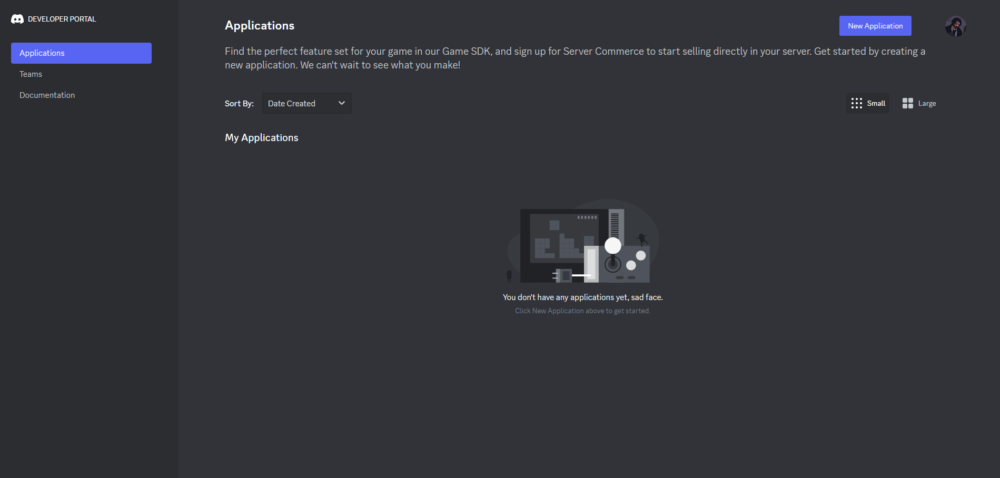
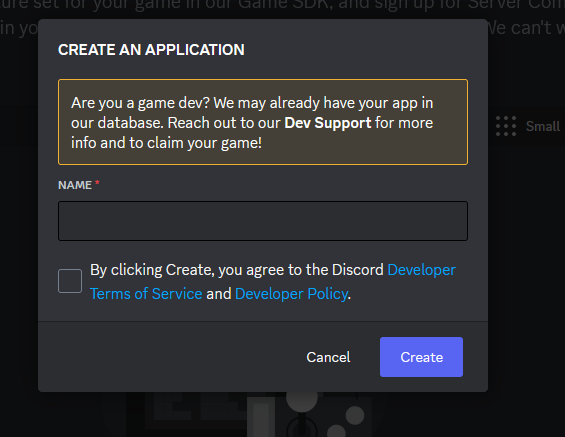
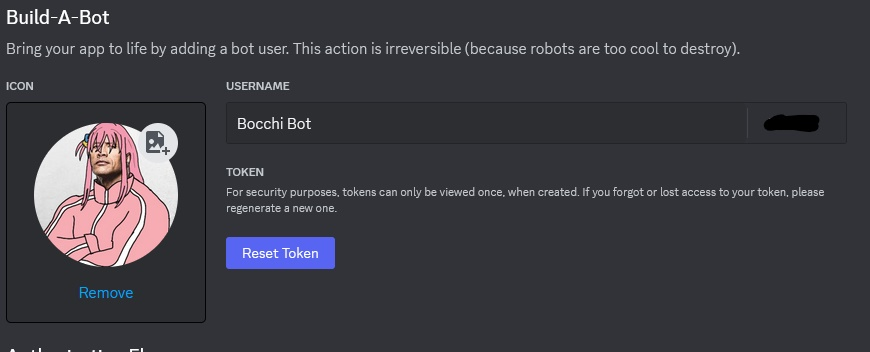
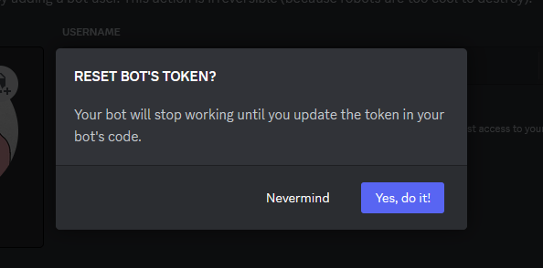
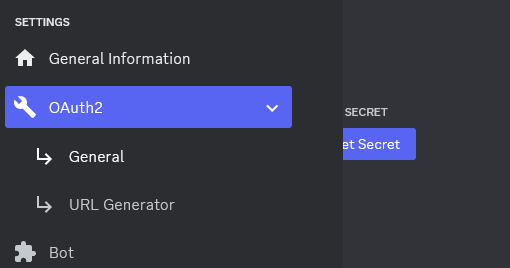
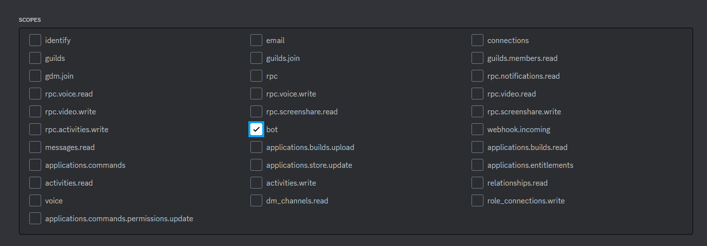
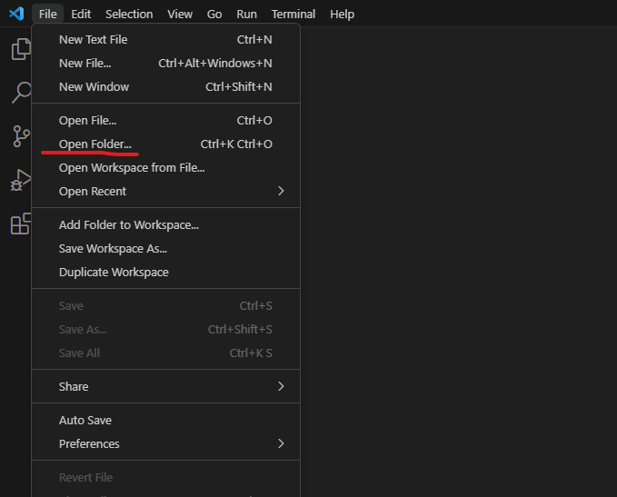
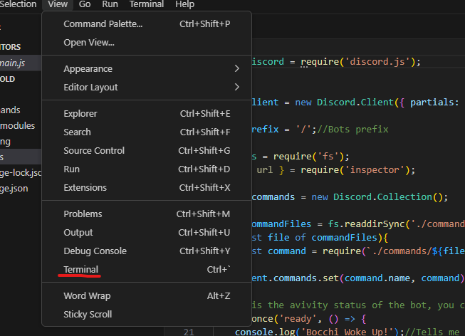

To set up your Discord bot follow this step-by-step guide: Login into the discord developer page with your discord account here. Go to application
And then click on New application Give your discord bot a name and create
Now in the General Information, you can give your bot a profile image Description and other identifying factors. Now we need to find the bot's token, so go to the Bot section under settings And there should be a Token reset button if you don’t already have your token
Press the reset token button And it will give you your new token
Copy this and put it somewhere not public on your device I create a new text file and paste it there usually Now before we start writing code for our Bot, let's add it to our server while we are still In the developer portal, head to the OAuth2 section under the settings and select URL Generator.
Select bot as our scope
And then select the permissions you want the bot to be given. And copy the generated URL into your browser to invite the bot to your server.

And now the bot is in your server, now let's set up how the bot operates To write code for our Discord bot we need to install Visual Studio Code and Discord.js. Go here. to install visual studio. All parameters can be left at their default values during installation.
Also make sure to install node.js so we can run the scripts during setup. Go here.
Once visual studio is installed we want to create a folder on our desktop to store our Discord bots files. Once those folders are created start the visual studio, and open the folder.
Then open up the terminal by going to View - Terminal.
Once the Terminal is open paste this code into the terminal
npm init
You can leave the default values and just press Enter for each item. Now let's install the package.json and discord.js paste this code into the terminal:
npm init install
npm install discord.js
Now that everything is installed, now is time to start writing our code. Create a file called index.js inside the folder. (.js files are files that contain JavaScript code for execution) You can use visual studio to write code or use other alternatives like Atom. Whenever you want to run the code for your bot to work, just paste this into the terminal: node index.js
I won’t give you an outline of what code you can write for your bot. But you want to use some of the public code I’ve created for discord bots You can check them out here: